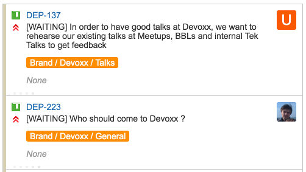

A few years ago, I wrote about how I started to use Jira as my personal Kanban board at work. A lot of things have changed since then, which brought me to update my board and make it even more productive !
The context
During the almost 18 months since I wrote this first post, a lot of things have changed in my daily work (hopefully : I’m not doing the same thing again and again !). Essentially, I got involved in more projects, some of which involve people from all around the company and some of which don’t require any code to be written. For example, I’m now engaged in our Agile Community of Practice, where I sometimes contribute content.
Here are the consequences on my work :
- I have more tasks to deal with, not necessarily more work, but still more tasks
- I have more sources of tasks : tasks can come from any of the projects I am involved in
- I have more tasks depending on other people, and that are in a
WAITINGstate meanwhile
I had to adapt my personal Kanban to this new workload.
The changes
As I explained in the previous description of my Jira Personal Kanban, I am using a custom project and Kanban board to aggregate all my tasks from various projects, in order to see everything in a single unique place. Here are the changes I’ve made since, so if you haven’t yet, it might be a good idea to read that previous version first.
Quick filters
In his post Maker’s Schedule, Manager’s Schedule Paul Graham explained the challenge of having a lot of non-programming work to do everyday for programmers. He then advises to use slots for different activities during the day, in order to keep uninterrupted chunks of time to do creative work. To apply this technique, I reserved ‘Unbookable except for X’ slots in my calendar everyday.
I had previously been using Swim-lanes to track work from different projects. This turned out not to scale very well to more projects : it made the board messy, and I kept being distracted by all these other tasks. I ditched all the Swim-lanes (not exactly, I kept one for urgent issues only). Instead of Swim-lanes for tracking projects, I now use Quick Filters. I created such filters as With Project X and Without Project X. During the day, when I want to focus on Project X, I use quick filters to only show tasks related to it.
Day markers
I have a daily routine of checking what’s on my plate and deciding what I’d like to achieve during the day (picking the right time to do this is an art in itself). In order to keep track of this, I use special day marker tasks : as ^^^ TODAY ^^^, ^^^ TOMORROW ^^^ and ^^^ THIS WEEK ^^^. This tasks are always in my TODO column, and will never be completed. I move them around to mark what I expect to finish at different time horizon. Ex : everything above ^^^ TODAY ^^^ should be finished before the end of the day.
Again, this helps me to focus on today’s activities, and to do just enough prioritization.
One last thing here, you’ll have noticed the Epic for these special tasks. It’s a way to identify them in JQL queries.
WAITING flag
Quite often, you have tasks waiting for someone else. That’s surely not the most efficient situation, but once you leave the comfort of your focused dev team, handoffs are often the norm (at least until the lean principles spread in every part of the business). Status of waiting tasks is worth checking regularly, but very certainly not many times per day !
Again, leaving them in my board created useless distraction. I have now taken the habit of renaming the tasks I’m waiting for with a [WAITING] ... prefix. On top of that, I created 2 quick filters WAITING and Without WAITING to quickly check and then forget about waiting tasks.

Watching tasks I’m not the assignee of
On some occasions, we might be two of us working on the same task, or I might want to keep an eye on a task to know if something is needed from me. As there is only a single possible assignee in Jira, I changed my global filters to also include tasks with a custom label pbourgau-watch. Any time I want to add a task in my board, I just add this label to it.
Getting the Lean reports back
In order not to have too many old tasks in my board, I used to filter out old items in the global filter. This did the job, but at the cost of invalidating the lean reports (cumulative flow and control charts). In order to get these back, I removed this constraint from the global filter, and created yet another quick filter Without Old which I almost always keep on.

Scripts
Global Filter
1 2 3 4 5 6 7 | |
Quick Filters
1 2 3 4 5 6 7 8 9 10 11 12 13 14 | |
Things that did not change
I still use a WIP limit on the In Progress column, display the Epic in on the cards and special use custom color coding for tasks :
1 2 3 4 5 | |
The result
Overall, this is how my board looks like :
{kind=link}
I guess I’m a kind of personal productivity geek … but I believe it’s a skill of utter importance for developers, especially when they get a bit of experience and are not fed ready made tasks to do.